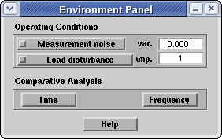
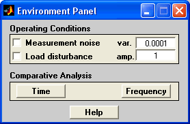

| AutotunerPID Toolkit | |
Environment Panel
The Environment Panel is designed as a console from which controlling the simulation environment, particularly the parameters which are not under direct control of the user, so that they cannot be included in the PID control panel. It also includes tools to perform a comparative analysis of the autotuning methods in both time and frequency domain.
| Linux | Windows |
|  |  |
In the following we will briefly summarize the characteristics of this interface, which is mainly split in three areas.
Operating Conditions
It controls the simulation environment, through the following settings:
Comparative Analysis
This area include analysis tools for both time and frequency domain. In particular, the time domain analysis perform a comparison of the responses to a step on the set-point and on the load disturbance for a PID tuned with all the available methods. The frequency domain analysis, instead, reports the open loop Bode diagram of the control system together with the Bode diagram of the complementary sensitivity and the sensitivity function.
See a sample of the analisys in the Example section.
| Note The comparative analysis is available only when the model is NOT running and for linear plants. Moreover the name of the blocks inside the Plant subsystem should not be changed since they are used as references in the functions performing this analysis |
Help
The Help button opens this help in the predefinite web browser window.
| | PID Control Panel | Examples | |